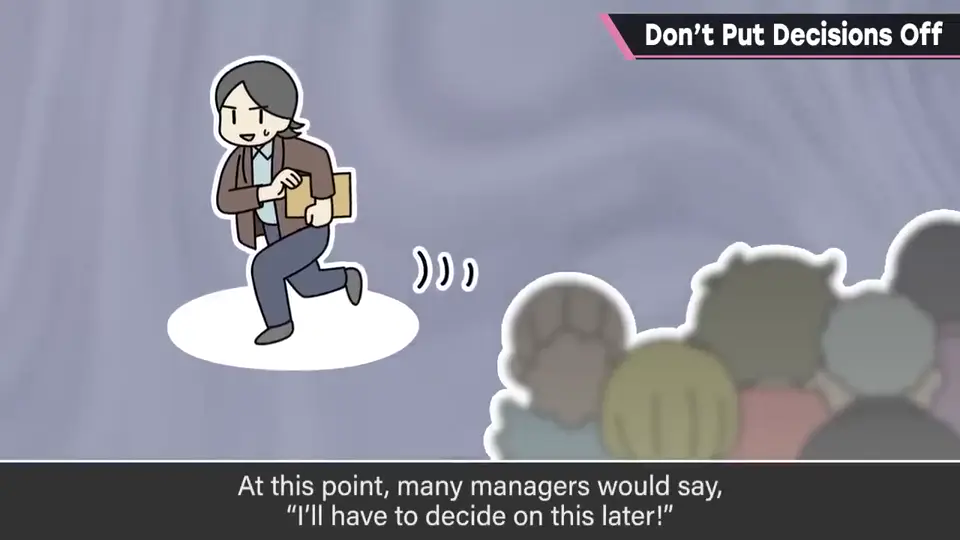
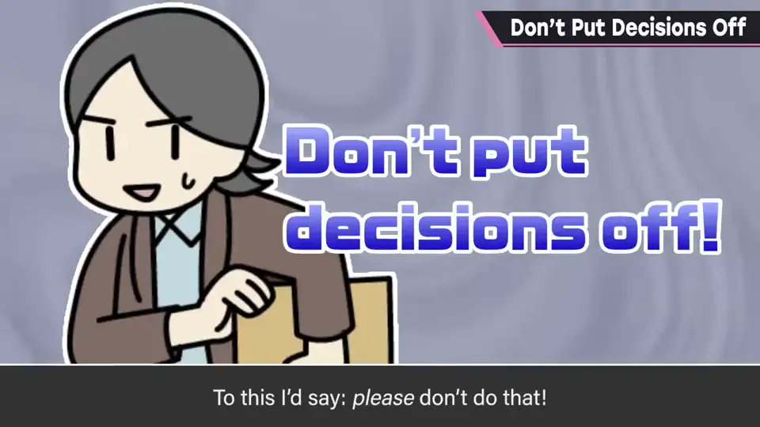
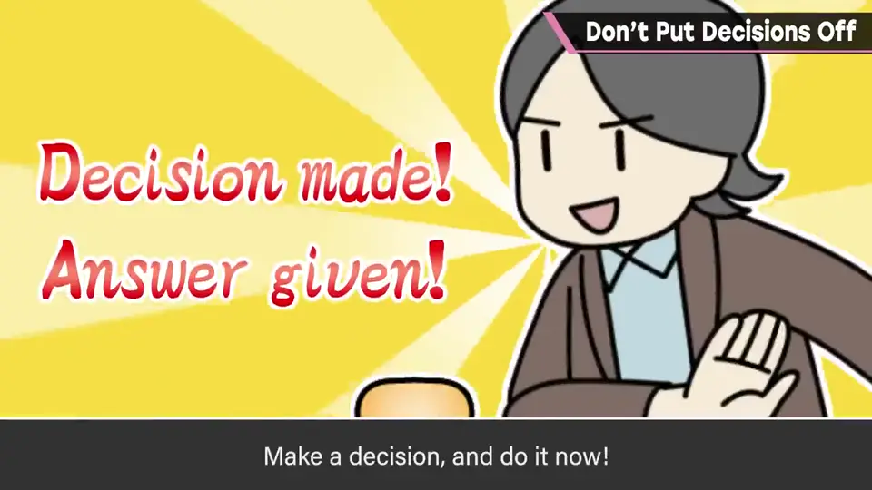
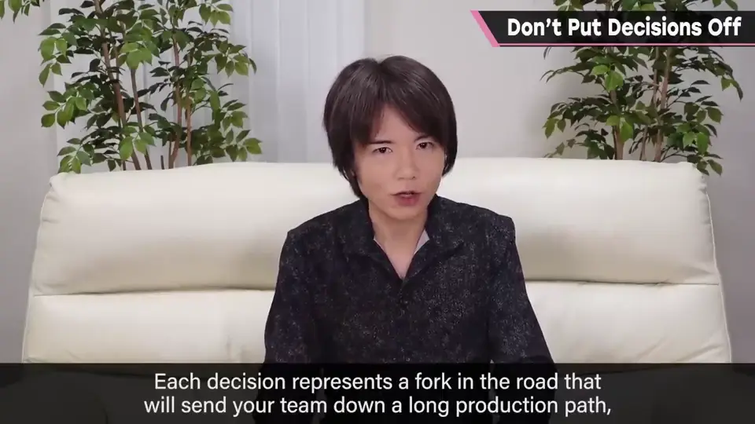
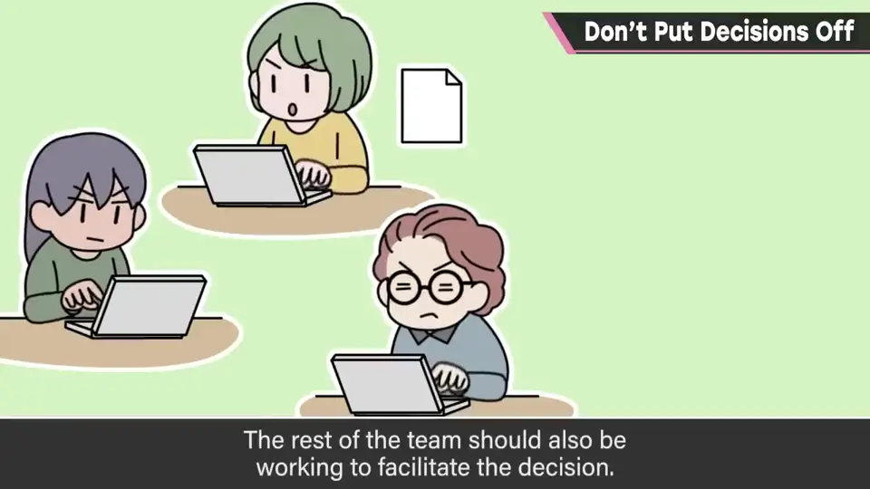
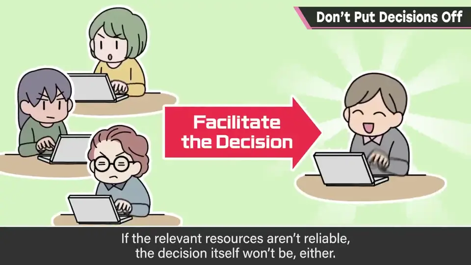
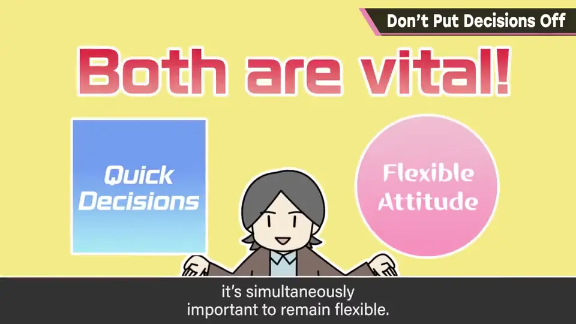
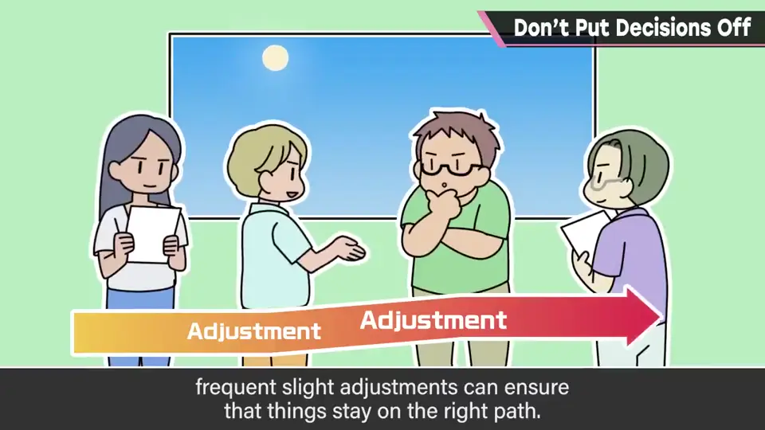

速览
要决定某事，召集人开会，结论定不下来，于是说「带回去研究」——这很常见，但请务必别这样。原则上应该当场决定：负责人不在场另当别论，但如果有判断权的人同席，就逼他决断；处在判断立场的人就当场即决。不把决断往后推：「现在马上决定！」。正如其名，游戏开发中的大部分事情应由总监看准方向判断。命运的分岔口总会到来，员工会以那个判断为基础进行漫长的制作，方向错了就会浪费大量时间——判断的责任确实重大。所以想更慎重、多商量、边做边决定的心情可以理解，但多数时候没有犹豫的时间。判断干脆利落、即时做出，因此得救的人比想象的多；等待判断期间案件就悬在半空。为了判断，各员工也需要准备：总之需要信息，判断材料有误，判断也会出错。不推迟判断很重要，但同时保持弹性也重要：发现某个错误时，不要因为「已经判断过了」就错着继续前进，而要能够为了修正而再次判断。如果决断是项目的轨道修正，细小而多次地进行，结果上会走得更正确。樱井在员工来商量时几乎即时判断，需要信息就去调查。最好一直认为：没有可以推迟到的「以后」。
1. 别「带回去研究」 0:03
要决定某件事，召集人开会，结论却定不下来，于是说「这个带回去研究一下」——这很常见。


负责人不在场另当别论；但如果有判断权的人同席，就逼他决断。处于判断立场的人，就当场即决——「现在马上决定！」

2. 判断为什么紧迫 0:44
正如其名，游戏开发中几乎所有事情都应由总监看准方向来判断。命运的分岔口总会到来，员工会以那个判断为基础进行漫长的制作，方向一错就会浪费大量时间。


判断的责任确实重大，所以想更慎重、多商量、边做边决定的心情可以理解。但多数情况下，没有犹豫的时间。
3. 判断需要准确信息 1:25
为了判断，各员工也需要做准备——总之需要信息。判断材料有误，判断也会跟着出错。

4. 同时保持弹性 1:41
不推迟判断很重要，但同时保持弹性也很重要。


如果发现了某个错误，不要因为「已经判断过了」就错着继续前进，而要能为了修正而再判断。
5. 樱井的做法 2:06
樱井在员工来商量时，几乎都是即时判断；需要什么信息，就去调查。
自测题
1. 有判断权的人在会议中应该怎么做？
当场即决，不把决定带回去推迟。 0:24
2. 为什么判断不能拖？
方向错误会浪费大量时间，但多数时候没空犹豫；等待期间案件悬空，即时判断能帮到很多人。 0:44
3. 「不推迟」和「弹性」如何兼顾？
当场决定，但发现错误时不错着走下去，而是再判断；细小多次地修正轨道。 1:41